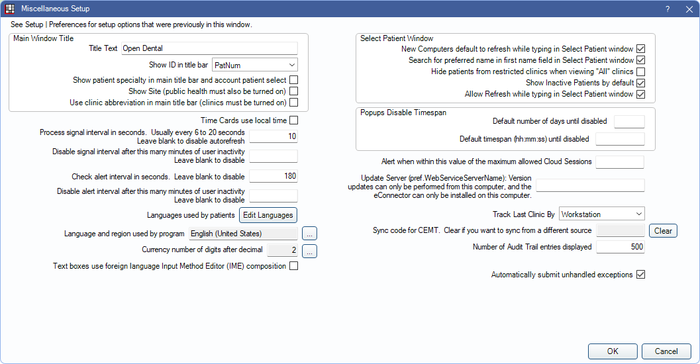
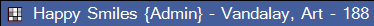
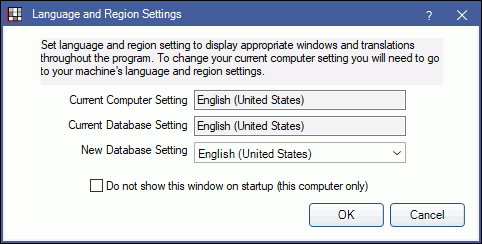
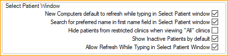

Miscellaneous Setup
In the Main Menu, click Setup, Miscellaneous.
In Miscellaneous Setup, customize Open Dental's general settings.
Main Window Title
These settings pertain to the main title window within Open Dental.

- Title Text: The text that shows at the very top left of the main window. Changing this text is useful when using multiple databases so users can easily identify which database they are currently using.
- Show ID in title bar: Select which information shows in the title bar of Open Dental.
- None: Do not show additional information in title bar.
- PatNum: Show patient name and number.
- ChartNumber: Show patient name and chart number.
- Birthdate: Show patient name and birthdate. We do not recommend using this setting if the Mask Patient Date of Birth preference is enabled.
- Show patient specialty in main title bar and account patient select:
- Checked: Shows patient specialty in title bar and patient select area of Account Module.
- Unchecked: Does not show patient specialty.
- Show Site: Show the patient's site if Public Health is turned on (Site List).
- Use clinic abbreviation in main title bar (clinics must be turned on): This setting determines what shows in the title bar for the selected clinic.
- Checked: The title bar shows the clinic's abbreviation.
- Unchecked: The title bar shows the clinic's full description.
Miscellaneous Settings

Time Cards use local time: This setting affects all workstations. It is useful when the server is in a different time zone than the workstation.
- Checked: The Time Clock will use the workstation's local time.
- Unchecked: The time clock will use the server time. This keeps all times consistent throughout the office and prevents tampering with the computer clock if the server is physically inaccessible.
Process Signal Interval in seconds: The interval, in seconds, that Open Dental will automatically refresh the Appointments module, task lists, and text notifications. Usually the value will be 6 to 20 seconds. Leave the field blank to disable auto-refresh. See Refreshing Data.
- If a workstation has a network access issue when it sends a signal, users will receive an Unhandled Exception error. We recommend clicking Quit and restarting Open Dental.
- A value must be entered when using the Kiosk Manager feature.
Disable signal interval after this many minutes of user inactivity: This setting is designed to limit the load on database from idle users. Enter the minutes of workstation activity that will cause Open Dental to stop sending automatic signals to refresh information. Keyboard and mouse activity will cause the view to start refreshing again. If an office sets this and want users viewing the appointment book to stay updated even though signals are not being processed because a workstation is idle, set the the preference, Refresh every 60 Seconds to true.
If used conjuction with Auto log off options for Open Dental or Windows (see Global Security Settings), it would be set to a lower value. If Auto Log off is set very low, like two minutes, this Disable signal setting would not be normally be used.
Disabling signals during workstation inactivity can prevent errors due to lack of network access (e.g. if the server is down and comes up again). Once the workstation becomes active (e.g. with a mouse click or mouse movement), the signal will resume at the set intervals (see above). Leave the field blank if you do not want to disable the signal during periods of inactivity.
If a shutdown signal is received, Open Dental will shut down without warning. This shutdown will log in the Logger folder. (Typically, C:\Program Files (x86)\Open Dental\Logger.)
Check alert interval in seconds: The interval, in seconds, that Open Dental will check for Alerts. Leave blank to disable automatic checking.
Disable alert interval after this many minutes of user inactivity: This setting is only valid if a value for alert interval is entered above. Enter the minutes of workstation activity that will cause Open Dental to stop automatically checking for alerts. Once the workstation becomes active (e.g. with a mouse click or mouse movement), the alerts will resume at the set intervals (see above). Leave the field blank if you do not want to disable alerts during periods of inactivity.
Languages used by patients: Set up specific Language which can then be assigned in the Edit Patient Information.
Language and region used by program: Shows the database's current language and region setting. To change the database setting, click [...].
Click the New Database Setting dropdown arrow and select the new language and region. Click OK to save.
Usually database and computer settings will match. If they don't, a warning will show every time Open Dental starts. To stop this warning from showing, check the 'Do not show this window on startup (this computer only)'. Change computer settings in the Control Panel, Region and Language.
Currency number of digits after decimal: Indicates the current computer setting for digits after the decimal for currency amounts. The recommended value is 2. If the value is anything different, the message below will show every time Open Dental starts.

To change the currency setting, go to the Control Panel, Region, Additional Settings, Currency tab. To stop this message from showing on startup, check 'Do not show this window on startup (this computer only)'.
Alert when within this value of the maximum allowed Cloud Sessions: For Open Dental Cloud users only. Enter the number of sessions left before generating an Alert as a warning. (i.e. To generate an alert when 5 sessions are remaining, enter 5.)
Text boxes use foreign language Input Method Editor (IME) composition: Determines composition if users are typing in a foreign language that uses an IME keyboard (e.g. Korean, Arabic).
- Checked: Allows composition for IME keyboards. Disables Spell Check.
- Unchecked: Leave unchecked for standard english keyboards.
Select Patient Window
These settings pertain to the Select Patient window.
- New Computers default to refresh while typing in Select Patient window: Sets the default setting of the Refresh while typing checkbox on the Select Patient window for new workstation installations (Select Patient).
- Checked: The default setting for the Refresh while typing checkbox will be checked when installing on a new workstation.
- Unchecked: The default setting for the Refresh while typing checkbox will be unchecked when installing on a new workstation.
- Search for preferred name in the first name field in Select Patient window: Sets the search behavior of the First Name field on the Select Patient window.
- Checked: Open Dental will search for patients with matching first name or preferred name.
- Unchecked: Open Dental will search for patients with matching first name only.
- Hide patients from restricted clinics when viewing "All" clinics: Determines if patients from restricted clinics are hidden in the "All" clinics view.
- Checked: Patients from restricted clinics are hidden in the All view.
- Unchecked: Patients from restricted clinics will be visible in the All view. Attempting to select a patient from a resticted clinic will display a warning that access is restricted for the current user.
- Show Inactive Patients by Default: Determines if patients marked as inactive show in the Select Patient window.
- Checked: Defaults Show Inactive Patients to on in the Select Patient window.
- Unchecked: Defaults Show Inactive Patients to off in the Select Patient window.
Allow Refresh While Typing in Select Patient Window: Determines whether the Refresh While Typing checkbox in the Select Patient window can be used.
- Checked: Allows Refresh While Typing to be checked or unchecked as needed.
- Unchecked: Disables Refresh While Typing entirely. Users must click Search to find patients.
Popups Disable Timespan

Default number of days until disabled: Enter the number of days to automatically disable a popup after it has been created. Individual popups can have the disabled time edited as needed.
Default timespan (hh:mm:ss) until disabled: Enter the time in hours, minutes, and seconds to automatically disable a popup after it has been created. Individual popups can have the disabled time edited as needed.
Miscellaneous Settings Continued

Alert when within this value of the maximum allowed Cloud Sessions: For Open Dental Cloud users only. Determines when the Cloud Sessions Limit Alert is sent. Enter the number of sessions left before the alert is generated. (i.e. if the office has a 20 session maximum limit, and 5 is entered here, an alert is generated when 15 sessions are active.)
Update Server Name: Indicates the computer name that has permission to execute updates. For Middle Tier, it identifies which computer is running the middle tier.
- If the server name exceeds 15 characters, users may receive an error when attempting check for updates or install services. If the server name exceeds 15 characters, only type the first 15 characters.
Track Last Clinic By: For Clinics only. Affects which clinic is selected in the Main Menu, Clinics when a user logs on to a workstation.
- None: Select the user's default clinic.
- Workstation: Select the clinic last selected on the workstation, if the user has access to it. If not, select the user's default clinic.
- User: Select the clinic that was active the last time the user logged off.
Sync code for CEMT: Indicates the Sync Code of the Central Enterprise Management Tool ( CEMT ) database this database is associated to. All database connections which are affected by a CEMT sync have a code listed here. If the code is cleared, CEMT users can sync from any database, but this is not recommended.
Number of Audit Trail entries displayed: Set the default number of log entries that will display in the Audit Trail at one time.
Audit Trail uses Reporting Server: Only displays when a Report Server is enabled. Determines if the Audit Trail should run on the local machine or the report server.
- Checked: Audit trail uses the reporting server.
- Unchecked: Run audit trail on the local machine.
Automatically submit unhandled exceptions: Determines if Unhandled Exception errors are sent to Open Dental headquarters.
- Checked: Automatically submit Unhandled Exception errors to Open Dental Headquarters. This is done in the background securely and no PHI is sent. Errors are only sent for offices on the latest stable version or using any beta version.
- Unchecked: Disables automatic submission of Unhandled Exceptions.
Middle tier server caches all fees: Determines if a Middle Tier server will cache non-hidden fees. Useful for offices experiencing slowness. Only applicable if using Middle Tier.
- Checked: The Middle Tier server will store non-hidden fees for all clinics in its cache. When checked, restart the Middle Tier server's IIS for changes to take affect.
- Unchecked: The Middle Tier server will use the database to find a fee.